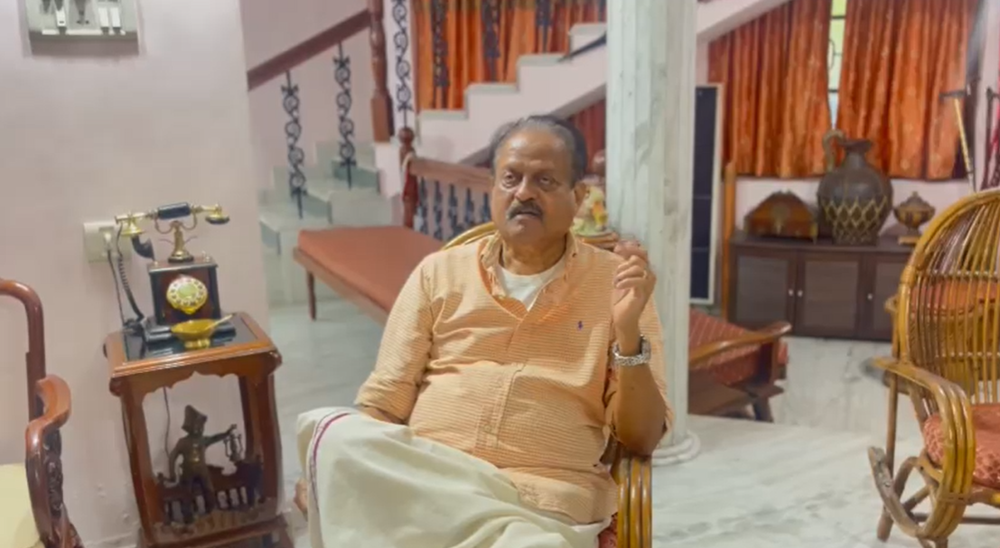

A village shaped by water, people and tradition.
Kumbalangi is more than a tourist destination. It is a living community where fishing, farming, coir-making, food traditions and backwater life have shaped generations.
Explore KumbalangiWith a population of over 1 lakh, Kumbalangi is home to farmers, labourers, fishermen, coir spinners and toddy tappers. The main occupation of the villagers is fishing and there are over 100 Chinese fishing nets dotting the backwaters facing the village.
Three pathways into the heart of the village
The most important stories come from the people who call this place home.

He has witnessed the changing life of Kumbalangi — fishing then and now, shifts in employment, the arrival of tourism, and the slow changes in the waterways themselves.
Tourism can support local livelihoods — or harm the very ecosystem that makes Kumbalangi special. Learn how to visit with care.
Guidelines for visitors →